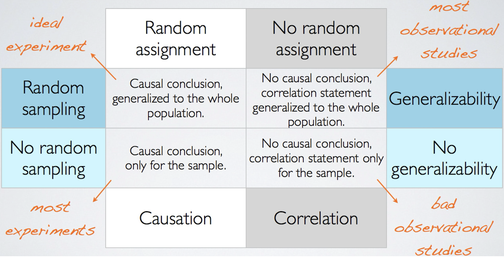
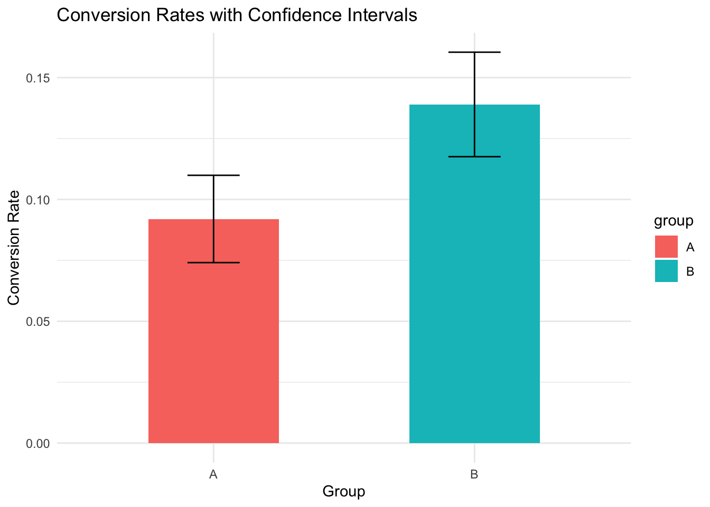

MGMT 17300: Data Mining Lab
A/B Testing (Experimentation)
Overview
- Introduction to A/B Testing
- Statistical Testing Methods
- Effect Size and Business Implications
- Practical Applications of A/B Testing
Study Design
Study Design
Observational
In observational studies, no attempt is made to control or influence the variables of interest. A survey is a good example.
Example: researchers observing a randomly selected group of customers that enter a Walmart Supercenter to collect data on variables such as time spent in the store, gender of the customer, and the amount spent.
Experimental
An experimental study involves the active manipulation of one or more independent variables to observe their effect on a dependent variable, while controlling for confounding factors. Participants are typically randomly assigned to groups (e.g., treatment vs. control), and outcomes are compared to determine causal relationships. This design provides strong evidence for cause-and-effect due to the controlled environment and random assignment.
The largest experimental study ever conducted is believed to be the 1954 Public Health Service experiment for the Salk polio vaccine. Nearly two million U.S. children (grades 1 through 3) were selected.
Study Design
Study Design: Random Assignment vs. Random Sampling

Introduction to A/B Testing
A/B Testing
Definition: A/B Testing is an experimental design technique to compare two versions (A and B) of a variable to determine which one performs better.
Applications:
- Marketing: Testing website versions.
- Operations: Evaluating process changes.
- Product Development: Comparing feature designs.
Key Components:
- Control Group (A): Baseline version.
- Treatment Group (B): Modified version.
- Metric: The outcome to measure success (e.g., conversion rate, click-through rate).
Data Simulation for A/B Testing
Generating Synthetic Data
This simulation aims to replicate a business scenario where a company is testing two different versions of a website to improve user conversions.
The Control Group (A) represents the current version of the website, which has a baseline conversion rate of 10%.
The Treatment Group (B) represents a redesigned website with potentially improved usability, targeting a higher conversion rate of 12%. The simulation generates data to mimic user interactions for both groups.
# Load necessary library
library(dplyr)
# Set seed for reproducibility
# Ensures that the random numbers generated are the same every time the code is run.
set.seed(123)
# Simulate data for Group A (Control) and Group B (Treatment)
# `n` defines the number of samples per group.
n <- 1000
# Create a vector indicating group membership.
# The `rep` function repeats "A" and "B" `n` times to assign each sample to a group.
group <- rep(c("A", "B"), each = n)
# Generate conversion outcomes for each group using the binomial distribution.
# `rbinom` creates binary outcomes (0 or 1) for conversions.
# Group A has a 10% conversion rate, and Group B has a 15% conversion rate.
conversion <- c(rbinom(n, size = 1, prob = 0.10), # Group A conversion rate: 10%
rbinom(n, size = 1, prob = 0.15)) # Group B conversion rate: 15%
# Create a data frame combining group and conversion outcomes.
# Each row represents an individual observation.
ab_data <- data.frame(group, conversion)
# Summarize the data by group.
# Calculates the conversion rate (mean of conversion) and the count (number of observations) for each group.
summary <- ab_data %>%
group_by(group) %>%
summarise(conversion_rate = mean(conversion), # Average conversion per group
count = n()) # Total samples per group
# Print the summarized data to view conversion rates and counts for each group.
# print(summary)Statistical Testing in R
The Need for Statistical Testing
A/B Testing relies on data sampled from populations, which can be influenced by random chance.
Statistical testing helps determine whether observed differences in metrics (e.g., conversion rates) are statistically significant or just due to random variation.
Without statistical testing, business decisions might be based on misleading results.
Common Statistical Tests in A/B Testing
Chi-Square Test: Used to compare categorical data (e.g., conversion rates).
Two-Sample Proportion Test: Compares the proportions between two groups.
T-Test: Compares means between two groups (e.g., average time spent on site).
Mann-Whitney U Test: A non-parametric test to compare distributions.
ANOVA: Used when comparing more than two groups.
Chi-Square Test
The Chi-Square Test evaluates whether there is a statistically significant association between group membership (A or B) and conversion outcomes (success or failure). In our example, it helps us determine if the higher conversion rate observed in Group B is due to the redesign or random chance.
# Create a contingency table
table_ab <- table(ab_data$group, ab_data$conversion)
# Perform Chi-Square Test
chi_test <- chisq.test(table_ab)
# Display results
print(chi_test)Considerations:
Assumptions: Requires expected frequencies > 5 in each cell. Ensure sample sizes are adequate.
P-Value: A small p-value (< 0.05) suggests that the difference in conversion rates is statistically significant.
Conclusion:
The p-value (0.00129) is significantly less than 0.05, indicating a statistically significant difference in conversion rates between Group A and Group B.
This supports the hypothesis that the redesign (Group B) has a positive impact on conversions.
Two-Sample Proportion Test
This test compares the conversion proportions directly between the two groups. It is particularly useful for binary outcomes, like conversions, where we want to quantify the difference in proportions.
# Conversion counts
conversions <- table(ab_data$group, ab_data$conversion)[, 2]
total <- c(sum(ab_data$group == "A"), sum(ab_data$group == "B"))
# Proportion test
prop_test <- prop.test(conversions, total)
# Display results
print(prop_test)Considerations:
P-Value: Indicates whether the observed difference is significant.
Confidence Interval: Provides the range of plausible values for the difference in conversion rates.
Effect Size: Quantifies the magnitude of the difference, helping gauge practical significance.
Conclusion:
The p-value (0.00129) is less than 0.05, confirming a statistically significant difference in conversion rates between Group A and Group B.
The confidence interval (-0.0759 to -0.0181) does not include 0, which further supports the finding of a significant difference.
The observed conversion rates (9.2% for Group A and 13.9% for Group B) suggest that the redesign (Group B) leads to higher conversions in a practically meaningful way.
Visualizing and Interpreting Results
Visualize Confidence Intervals

Effect Size Calculation
Effect size quantifies the magnitude of the observed difference between two groups, helping to interpret its practical significance. For this example, we use Cohen’s \(h\), which is calculated as:
\[ h = 2 \times \arcsin(\sqrt{p_2}) - 2 \times \arcsin(\sqrt{p_1}) \]
# Proportions for Group A and Group B
p1 <- summary$conversion_rate[summary$group == "A"]
p2 <- summary$conversion_rate[summary$group == "B"]
# Calculate Cohen's h
h <- 2 * (asin(sqrt(p2)) - asin(sqrt(p1)))
# Display effect size
cat("Cohen's h: ", h, "\n")Interpretation:
- Small Effect: h ≈ 0.2
- Medium Effect: h ≈ 0.5
- Large Effect: h ≈ 0.8
Conclusion: Based on the calculated Cohen’s h (0.1477):
The effect size is small, suggesting that while the redesign of Group B had a statistically significant improvement in conversion rates, the practical impact is relatively modest.
This indicates that additional changes or optimizations may be necessary to achieve a more substantial effect in improving conversions.
Effect Size Quantification
Using the difference in conversion rates:
- Conversion rate for Group A: \(p_1 = 0.092\)
- Conversion rate for Group B: \(p_2 = 0.139\)
- Difference in conversion rates: \(\Delta p = p_2 - p_1 = 0.047\)
For every 1,000 users in each group, additional conversions: \(\Delta p \times n = 0.047 \times 1000 = 47\).
Conclusion: The redesign in Group B is expected to generate 47 additional conversions per 1,000 users compared to Group A. While the effect size (Cohen’s h) is small, this additional number of conversions demonstrates a meaningful business impact for larger user bases.
Final Remarks
Final Remarks
- Lessons from the Example:
- Proper experimental design and statistical testing are critical to ensuring reliable results.
- The results from this analysis clearly showed that the redesign significantly improved conversion rates.
- Practical Use of A/B Testing:
- A/B Testing is a powerful tool in business analytics for optimizing decision-making processes.
- It allows businesses to empirically evaluate the impact of changes (e.g., website design, pricing strategies) on user behavior.
- Broader Implications:
- Businesses can use these methods to enhance user experience, increase revenue, and gain a competitive edge.
Additional Material
Additional Material
Summary
Summary
Main Takeaways from this lecture:
The Chi-Square and Proportion Tests help determine if differences between groups are due to real effects or random variability.
Interpreting statistical metrics like p-values, confidence intervals, and effect sizes ensures robust conclusions.
Visualizing results with confidence intervals enhances clarity and aids in communicating findings effectively.
A/B Testing is a vital tool for businesses to optimize strategies, boost user engagement, and achieve better conversion rates.